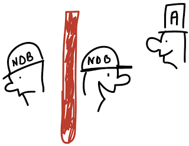

This post explains how to disable Arbitration when using MySQL Cluster. It gives a case where this could be useful.
First, a piece of advice: you do not want to run MySQL Cluster with arbitration disabled. But if you must, e.g. because of an oversight in your implementation, you can. Arbitration is very important in MySQL Cluster. It makes sure you don’t end up with a Split Brain situation: 2 halves working independently, continuing changing data, making it impossible for them to work together later on.

However, Arbitration comes with a price: you need an extra machine. “Sure, what’s the big deal?”. It’s not that easy when you lack the money, or more problematic, when you lack the real-estate in your rack.
Everyone running MySQL Cluster should know that you should not run the ndb_mgmd on the same machines on which the data node processes, ndbd or ndbmtd, are running. The Management Nodes need to be on a separate machine so it can act as an Arbitrator.
Here’s an example why: If you have two hosts A and B and both are running a management and data node process. Host A’s ndb_mgmd is currently the Arbitrator. Now unplug host A BANG: one data node and the arbitrator down. The other data node on Host B notices this, and tries to figure out if it can continue. So it checks if it can reach the Arbitrator: but it’s gone as well! So, the data node on host B goes faithfully down. This all happens in a few seconds, there is no time to elect a new Arbitrator. “Cluster’s dead, Jim”.
What if you can’t get a 3rd machine? There’s an option for that.. Data nodes can be configured with setting the Arbitration-option to WaitExternal. This means you will have to develop your own arbitration application or script. How cool is that? Well, it might be cool, but it’s a pain in the butt.
[ndbd default]
Arbitration = WaitExternal
ArbitrationTimeout = 3
What happens with our 2 host setup with above changes: When Host A, which has the Arbitrator, goes down, the data node on Host B will wait for 3 seconds, i.e. ArbitrationTimeout. It will block all incoming transactions, refusing changes. An application, the External Arbitrator, running on Host B (actually on all hosts running MySQL Cluster proceses) has 3 seconds to figure out whether Host B can continue running it’s ndbd process(es), or not. In this case, it should find out that Host A is down and that Host B should continue keeping the data available.
“Ah, easy! Problem solved!”, you might joyfully exclaim. No, it isn’t. It’s more complicated than that.
What happens when Host A doesn’t go down, but both hosts can’t see each other due to a network issue between them? Both External Arbitrators would figure out that they need to continue: you end up again with a split brain. So you still need someway to handle that.
At this point, I would like to say: “Goodluck!”.
Every situation is going to be different. Everyone will have his own External Arbitrator requirements or ways to check if a host or blade chassis is up or not. It’s a great option, and it puts you more in control of your MySQL Cluster, but it adds a lot of complexity.
So, my advice: revise and correct your MySQL Cluster setup when you think you need to disable Arbitration.
Comments
I was the main ideologist behind Arbitration=WaitExternal. (After we discussed the concept for a few weeks on 2 different continents, I believe Jonas coded the bulk of it in 20 minutes :-)
Nice to have some signature in MySQL Cluster to leave behind :-)
PS: So is there actually some external arbitrator available now? (Such as Solaris Cluster?)